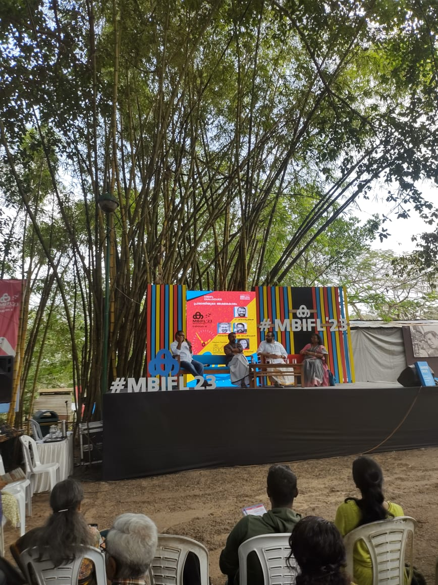
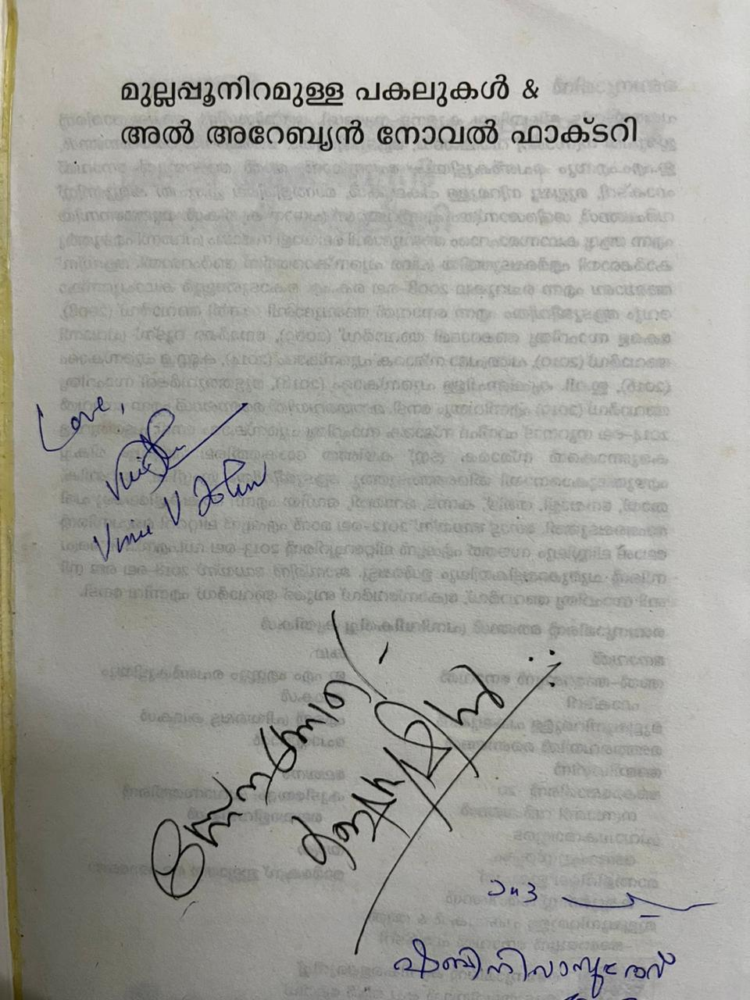
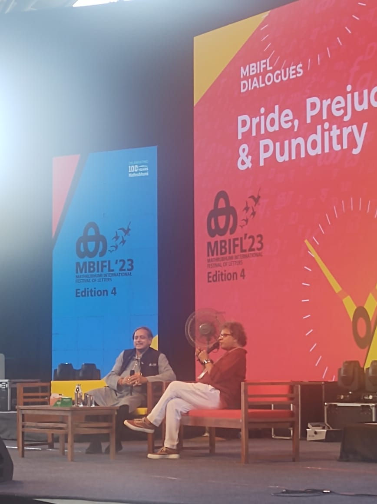

Since I am a frequent book purchaser from Mathrubhumi book, in January I got a notification to buy early bird tickets for MBIFL 2023. I immediately bought 4 day’s tickets to attend the literature festival. When it came to February, I realised due to some commitments at home and work, I couldn’t attend all the days of this literature festival despite having a ticket.
MBIFL had almost 300+ speakers, with famous speakers like Nobel prize winners, Brooker prize winners, politicians etc.
Yet I had just one wish. Benyamin is an author who has written lot of thriller novels like അൽ - അറേബ്യൻ നോവൽ ഫാക്ടറി and മുല്ലപ്പു നിറമുള്ള പകലുകൾ(which is a dual novel) along with the famous ആടു ജീവിതം(Goat Days). I just wanted to meet him in person and get an autograph on my copy of my favourite novel.

I travelled early morning from my house and reached the venue by almost 10:30 AM. During this time, there was a conversational session about പ്രവാസിയുടെ അക്ഷരകാലം with P Sreeramkrishan, Benyamin, Shabini Vasudev and KV Mohan Kumar. After the session, there was a huge fan base to meet author Benyamin. I first went to get a signature from another author KV Mohan Kumar in the panel, and then waited in the queue to get a signature from Benyamin.

After lot of books were signed by Benyamin which was bought by his fans with some of his famous works like ആടു ജീവിതം, മാന്തളിരിലെ ഇരുപത് കമ്മ്യൂണിസ്ററ് വർഷങ്ങൾ, അൽ - അറേബ്യൻ നോവൽ ഫാക്ടറി. I got my copy also signed with a salutation of snehattode(with love). I just asked my favourite author does a person named Sameera Parveen who was a character in Jasmine Days really exist or not. Benyam answered that it’s a mixture of multiple people who he had seen in his life, yet there is no one such person who doesn’t exist as Sameera Parveen like Najeeb in ആടു ജീവിതം.
My mission was just completed in one hour and I got a few more signatures like Shabini Vasudev who is an author from Bahrain and from Vinu V John, who is the star anchor of Asianet news(who kindly reminded me he is not famous to be giving autograph).

After that, I attended the talk with Aparna Balamurali and Captian GR Gopinath. Shashi Tharoor talked about his book Pride, Prejudice and Punditry. Seeing Tharoor answer a question to a student reminded me of India’s former people’s president APJ. I wish him all the success as a politician.
One of the last sessions I attended that day was by Polish author Justi Guziak on Know yourself to express yourself. This session talked about improvising and was a hands-on workshop to learn this art. During the session, the speakers gave me a chit with the question what was the best gift you have ever received?. This question was to be asked to someone who was at the other end of the audience. I gave my question and Janaki who was from Thiruvananthapuram told me the best gift she ever received was a dog she received when she was in her 7th standard. This dog has been living with her for the past 15 years as a constant when she went through her school, then college and even after her marriage. Another situation which was given during the workshop was to convince Mr Karun to give something valuable in his hand. After a lot of convincing, I was able to share the lunch with Karun.
That winded up MBIFL 2023, a literature festival for me a data scientist who doesn’t have anything related to it. It was cool to interact and meet with so many cool people. I am looking forward to MBIFL 2024 soon…

Update 1(March 5, 2023)
I found a very cool video in 360 degree which showed how the MBIFL 2023 venue atmosphere is. It was a very cool video and I thought of including this also with this blogpost.
Made by Kurian Benoy. See the code.